19 October 2026 · 15 images
Janaza of our esteemed Maulana Abdul Matin Saheb
Remembering our esteemed Maulana Abdul Matin Saheb. May Allah grant him Jannatul Firdaws and grant patience to his family and all who loved him.

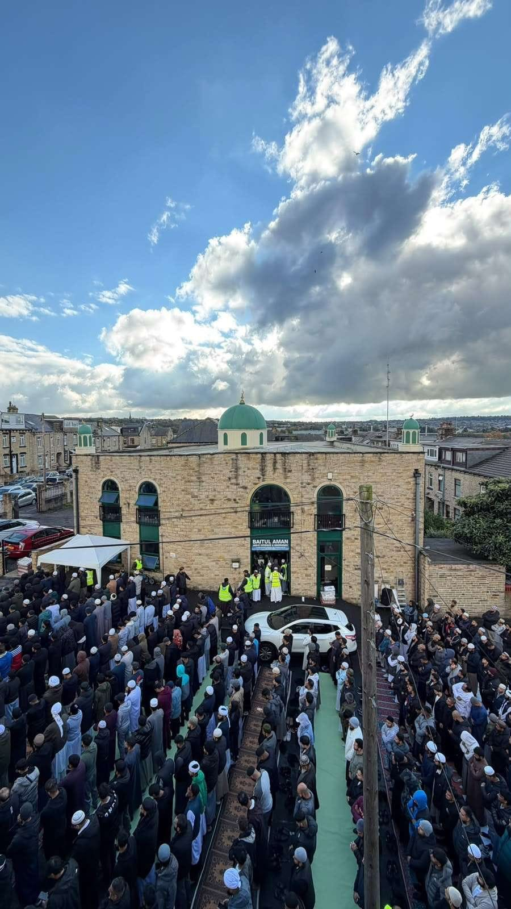

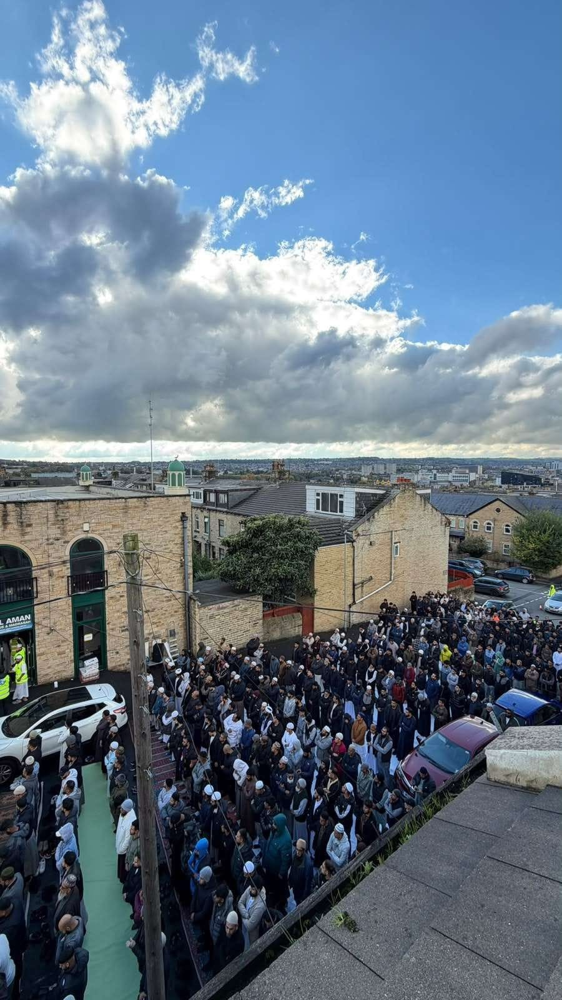

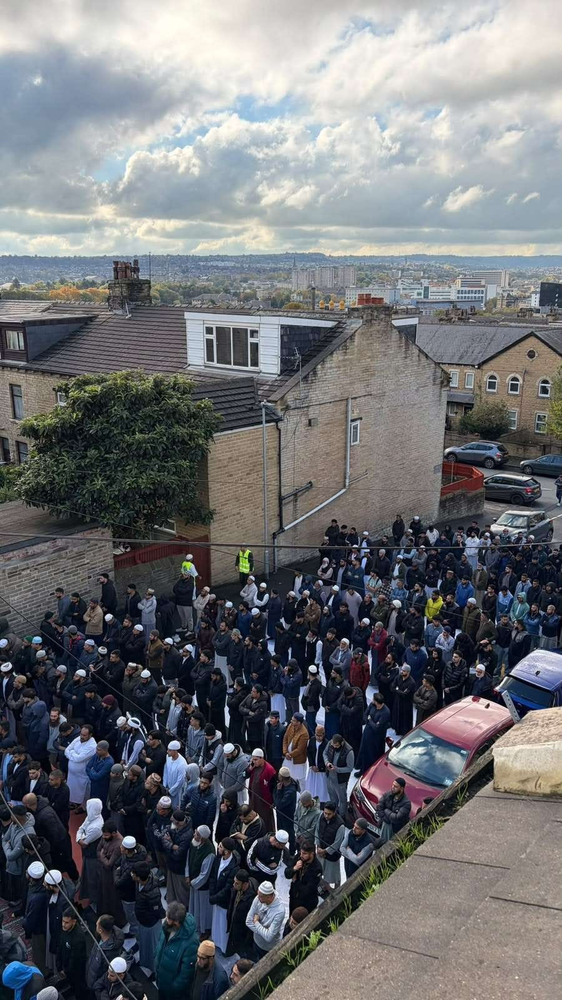

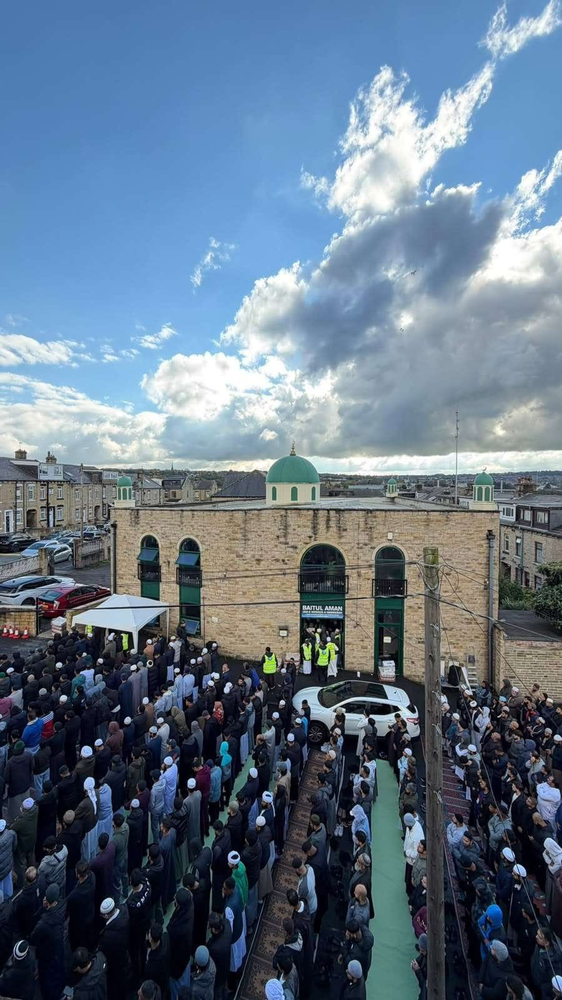

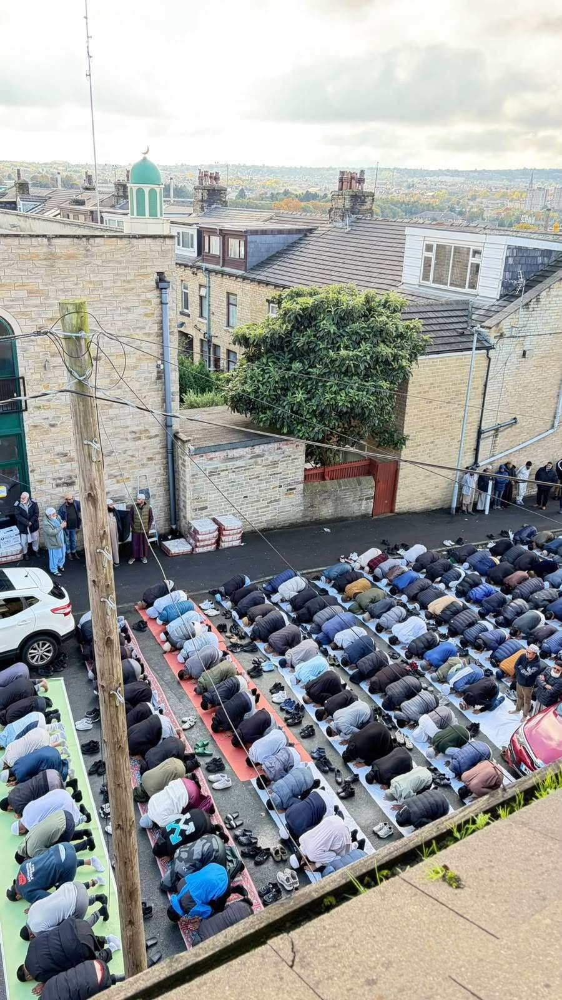

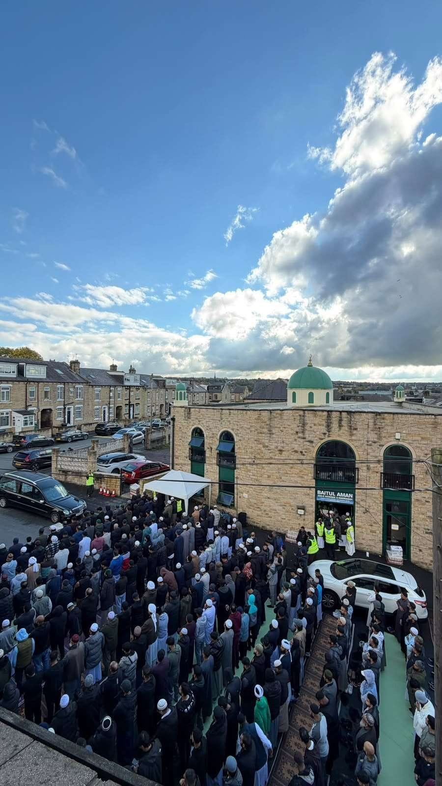

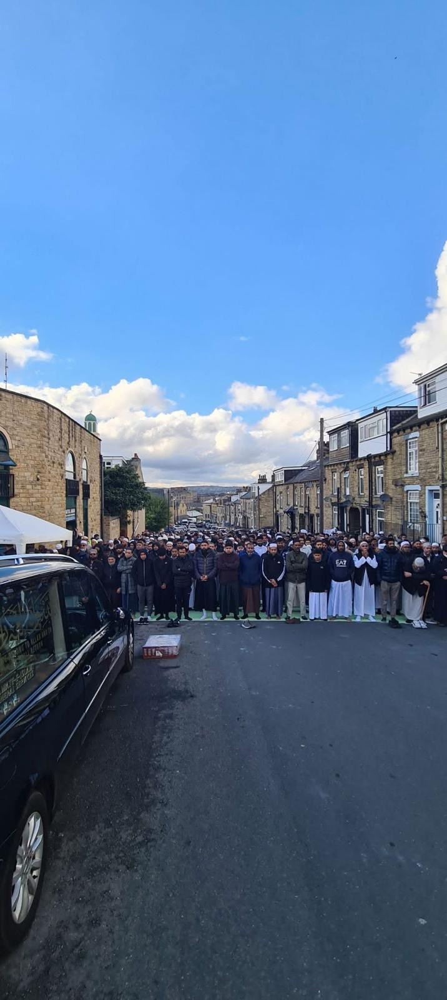

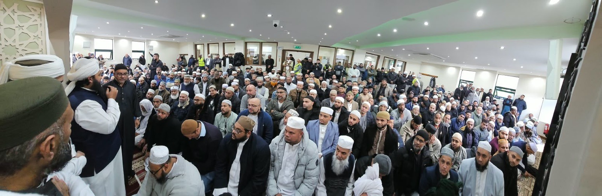

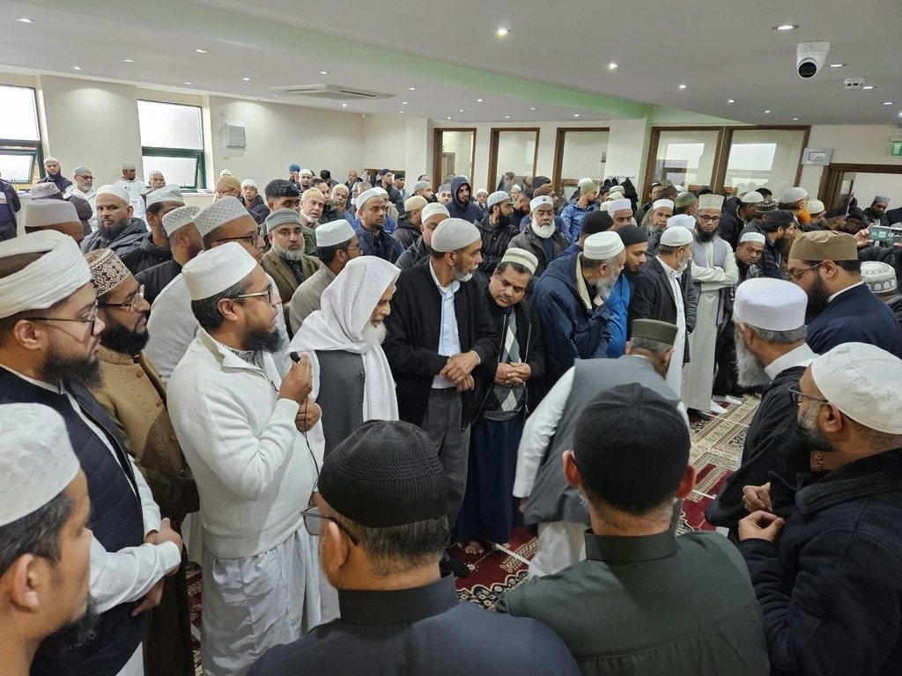

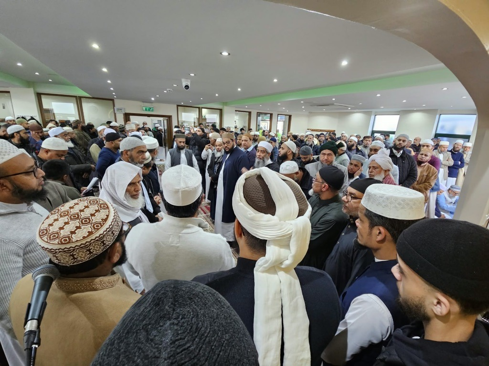

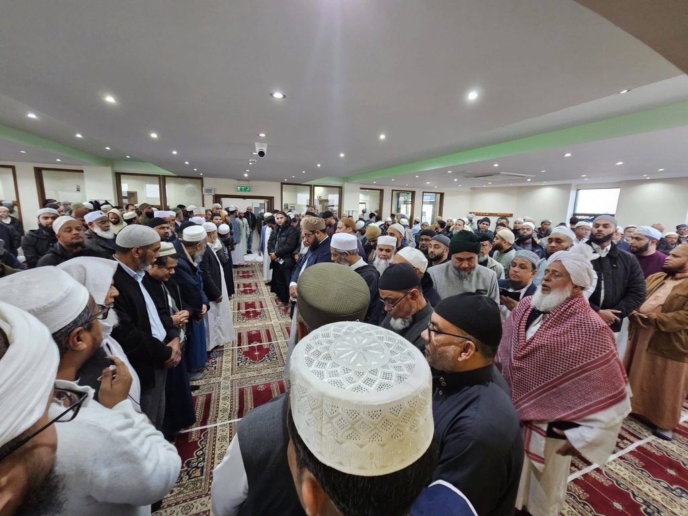

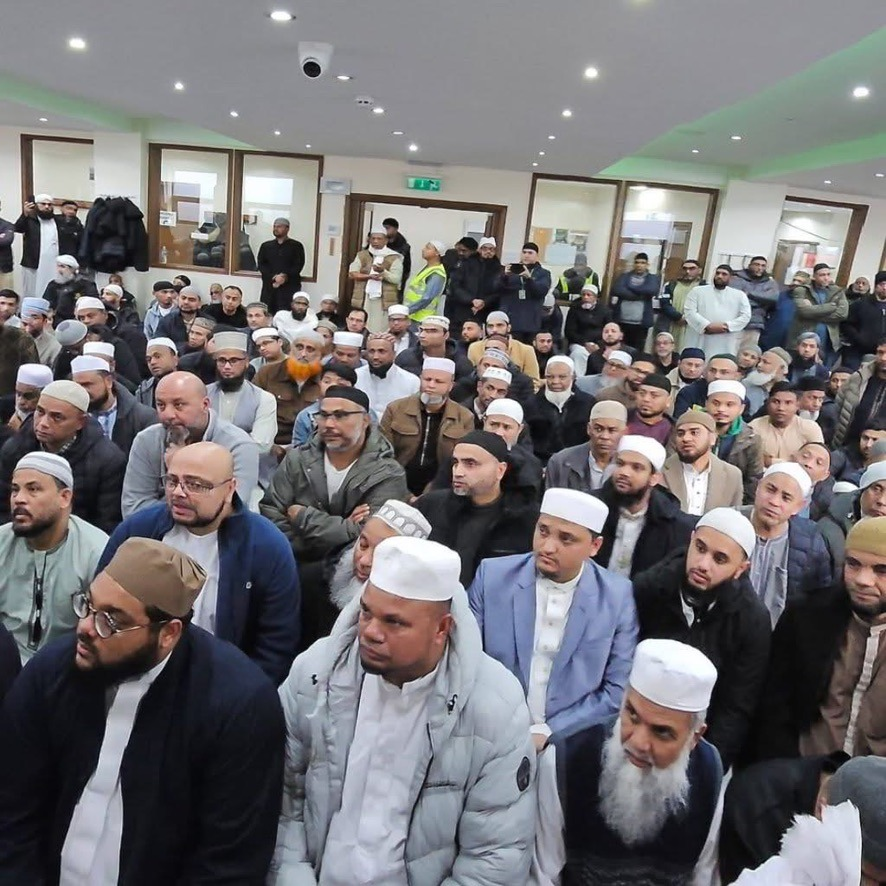

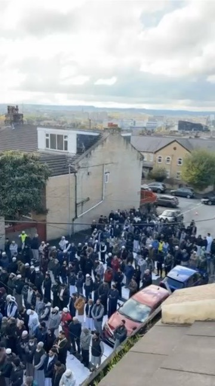

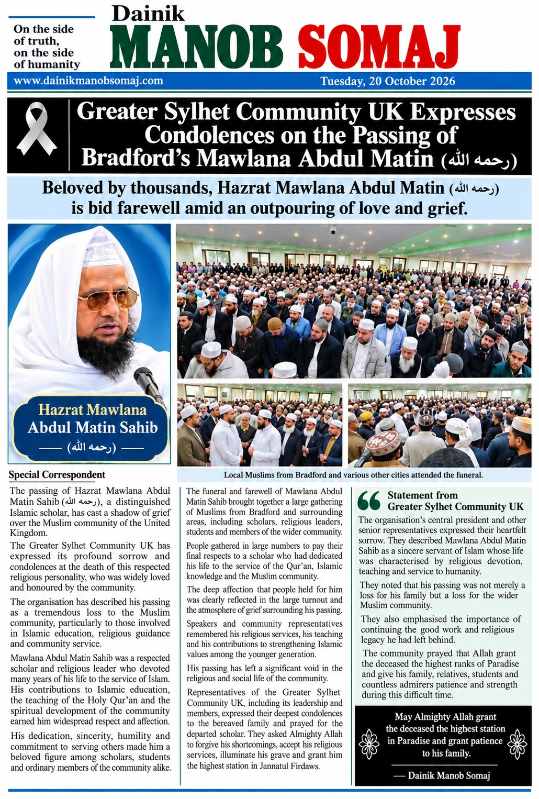